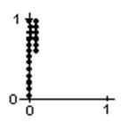
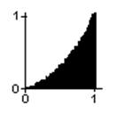
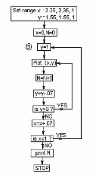

Plotting points on a calculator to find the area under curves/chapter 13
I was browsing through a Scientific American "Computer Recreations" article in which it looked like they were filling in squares on a computer screen. I asked myself "Could I do that on our programmable graphics calculator?" After a couple of hours of trying things and making mistakes (I was never very good at programming), I was able to plot points on the screen to make a 1x1 square starting on the left, below. I counted the number of points plotted, and this number was a measure of the area of the square. I wrote the program so it was possible to change the upper level of the points that are plotted, because the next thing I would wanted to do was to plot the points under a parabola, like x2, or x3, or a quarter-circle, a sine wave, or whatever. Very exciting! The figure on the right was the area under a parabola, from x=0, to x=1; as predicted, this area came out to be very close to 1/3.
 
My progam to plot the points to make a square:
|
|
Running this program fills in a 1x1 square; the number of dots varies with the calculator or computer. On my calculator I got 400 points. To change the program to plot the points under a parabola y = x2 from 0 to 1, replace the 1 in line 5 with x2. In the basic program change statement 20 from 81 to x2. I got the picture on the right with N=133. So the area under the curve y = x2 from 0 to 1 was 133/400, very, very close to 1/3 = 133/399, which is the integral of x2, from 0 to 1!! Needless to say, this was very exciting! I showed it to everyone- teachers, students, and parents. [N.B.- you might have to adjust the programs for your computer or calculator].
The following is a flowchart to help write the programs above.

Well now, if I don't have a calculator or computer can I still do this? SURE! I started doing this on 1/10" graph paper.
added the colors and some lines to make things more readable)
Matt, a 7 year old, counted the squares under y = x2 from x = 0 to x = 1.
He counted 32 squares, and 32/100 of the 1 x 1 blue square below as
the area. Byron, a 10 year old recently doing this, counted 42 squares and I
told him to go back and do it again and be more careful. He too came up with 32.
I asked Matt what simple fraction was close to this.
He said 1/3; I wrote this as 1/3*1*12 or 1/3*13.
From 0 to 2 he correctly predicted 1/3 of the 2x22 rectangle
or 1/3*23 (the green rectangle
above) as the area under the curve y = x2 from
x = 0 to x = 2.
Sean counted approximately 279 squares in going from 0 to 2, but was satisfied
this was close enough. He figured there are 20*40 = 800 little squares in the
2x4 green rectangle and the area should be 1/3 of 800 or 266.66... which is
close to 279. The notation I used on his graph I now have changed to and use
A0-1 (x2) = 1/3*13.
Then the area from 0-2 he wrote as A0-2 (x2)
= 1/3*23. Writing the area this way
instead of 1 and 8, makes it possible to see a pattern. I always want my
students to look for patterns. Writing the answers different ways often helps to
see the pattern.
What would you predict would be the area from 0-3? 0-4? 0-n?
How about finding the area under the curve y = x3 from
0-1? 0-2? 0-n?... Look for patterns!
See theintegral